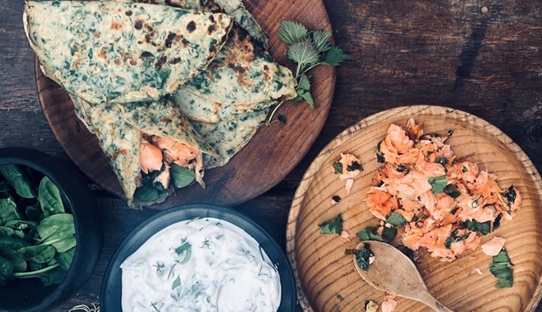

Planked Salmon

Description
Outdoor cooking is made easy with this method as you won't need any other heavy equipment. You just need a fire, a plank
and some wooden nails. Never use pine for your plank, though. The resin will ruin your fish/meat.
For this recipe we use salmon, wild garlic and spring onion, but you can easily change the ingredients with other types
of fish, meat and herbs. Flatfish with fresh thyme, mackarel with summer savory and seaweed salt, and chicken with
marjoram are three examples.
Ingredients
- 1 side of a salmon (min. 500 g)
- Salt
- Wild garlic, finely chopped
- Spring onion, finely chopped
- 100g of butter
- 1 plank and 2 wooden nails
Steps
-
Make a fire or light a grill. Choose a good plank and make two holes for the nails. If possible, let the plank soak in
water beforehand to prevent it from burning during the cooking process.
-
Place the salmon on the plank, skin side down. Season with salt, wild garlic and spring onion. Leave it to rest for a
short while to allow the flavours of the herbs to work their magic.
-
Fasten the fish to the plank with the two wooden nails. If the fish tends to slide off the plank, you can secure it with
string. Remember to use a string without plastic as it will melt.
-
Place the planked fish next to the fire. You don't want the flames to touch the fish, but let it cook by the heat of the
fire. Turn the plank at regular intervals to allow the salmon to cook evenly. If the heat is too intense, move the plank
a little away from the fire.
-
Melt the butter in a saucepan and add chopped wild garlic and spring onion. Frequently drizzle it over the salmon.
-
The salmon should be cooked in about 20 minutes and have a golden, crispy edge and a juicy centre. Serve the salmon with
fresh cream cheese, a green salad or green pancakes.
Return to the main page